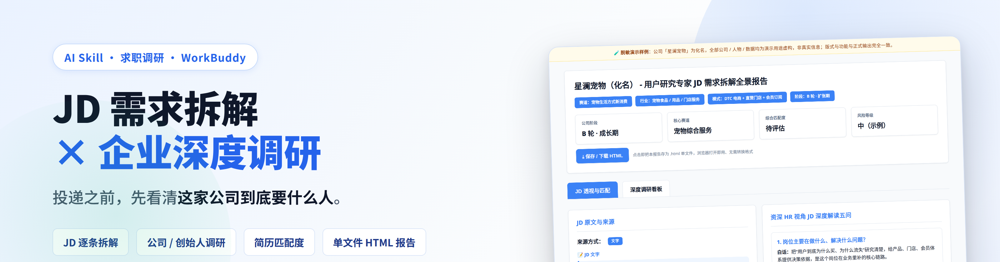
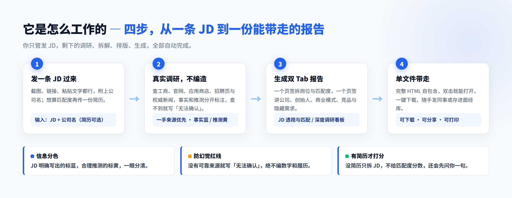
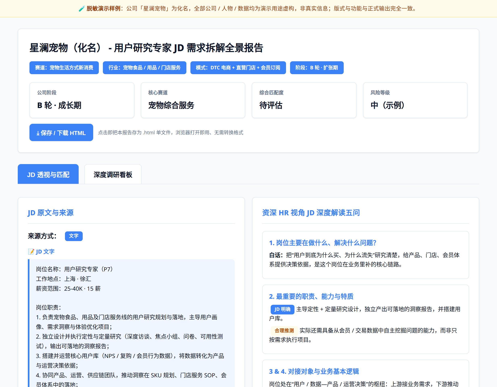
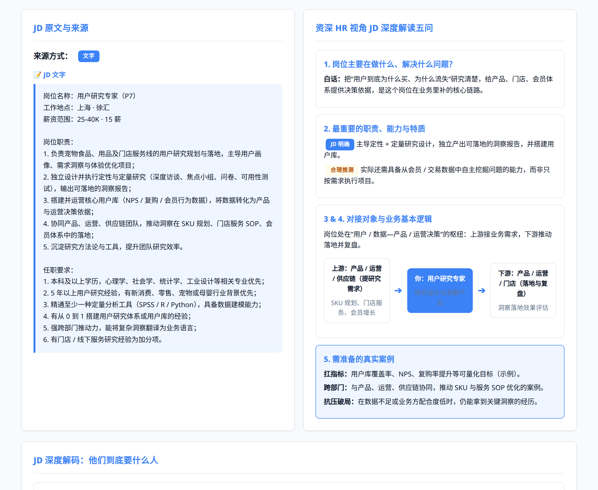
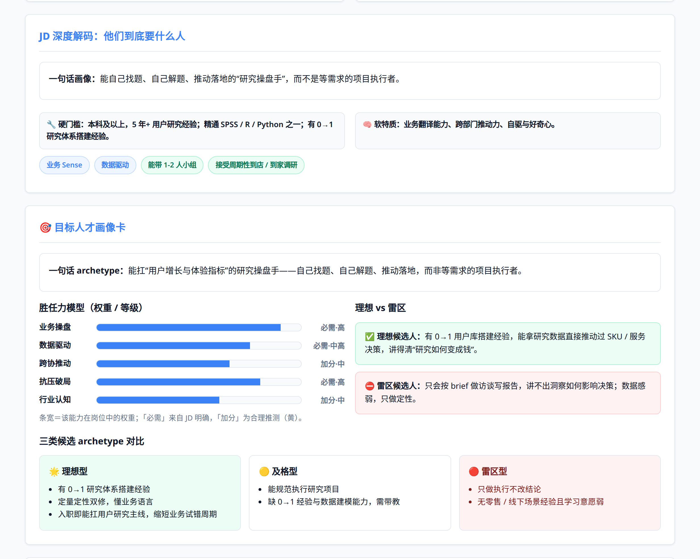
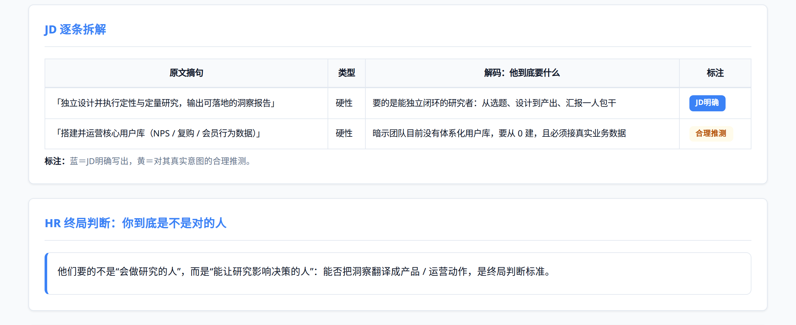
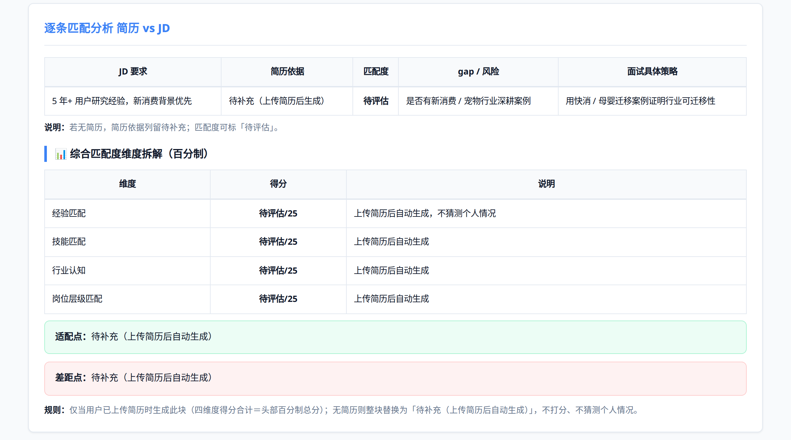
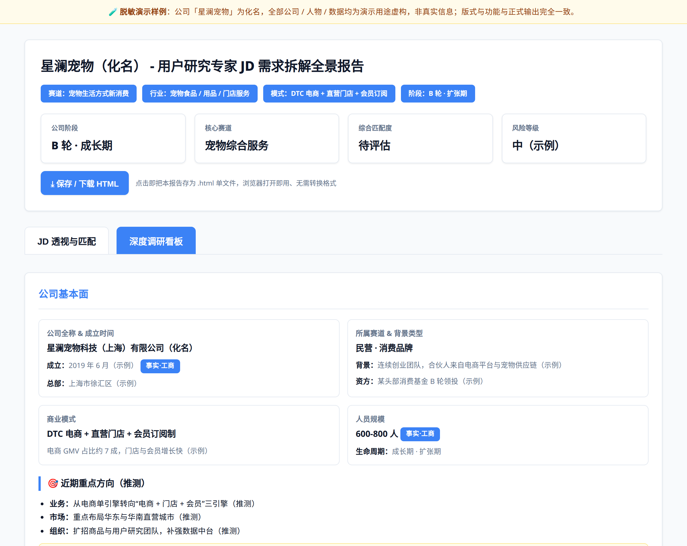

English version · 中文原版见 skill-guide.html
job-company-insightsA skill guide for interview research that can be shared directly with other AI agents / runtimes. Companion install package:
job-company-insights.skill(a standard skill package, ready to install).

| Field | Details |
|---|---|
| Role | Senior business due-diligence analyst + front-end visualization specialist |
| Input | Target JD (screenshot / link / text) + company name (résumé optional) |
| Output | A single-file, high-fidelity, two-tab HTML JD decode report (JD insights & fit / deep research board) |
| Use cases | Interview preparation, role and company research, candidate fit assessment |
Core principles: truth first, anti-hallucination, information separation (fact vs inference), code-only output.

In one line: it does not just paraphrase JD keywords. It puts the recruiter's view (the five HR questions, decoding real intent, the target persona) and the candidate's view (fit score, gaps, interview strategy) into the same report.
A JD image or link is enough to start research
Whenever the user sends a JD screenshot (image) or a JD link, immediately invoke the research capability to look up company information, recent moves and business-registration facts — with no extra instruction from the user. If no company name is given, first try to identify it from the screenshot / link; ask only if it cannot be identified.
Overall fit score out of 100: score only when a résumé is available
The system detects automatically whether both the JD and the résumé are present, with no user instruction needed:
82/100);experience / skills / industry knowledge / seniority (weights total 100), listing strengths (green boxes) and gaps (red boxes);"I've got the role. If you upload your résumé too, I can calculate a fit score and show exactly where you qualify and where you fall short. With only the JD, I can break down the requirements but can't compare them with your background — would you like to add a résumé?"
To be added / To be assessed.Core principle: a fit score exists only when there is a résumé, and no score without one; prompts use plain language; when information is missing, ask before acting — never guess.
<!DOCTYPE html> + <style> + <script>), with no external dependencies (no CDN, external fonts or images). JD screenshots are embedded as data:image/...;base64,... to keep the file self-contained.<h1> must read 【Company Name】 - 【Role Title】 JD Decode Report (no numbering, no parentheses).() （）.Company stage / Core track / Overall fit (out of 100) / Risk level.switchTab(event, id); no numbering and no parentheses..tag.fact (blue = fact · registration / explicit in JD) / .tag.infer (yellow = reasonable inference).border-left:4px solid..matrix-table, light-grey header, vertical cell borders.| # | Module | Highlights |
|---|---|---|
| 1 | JD source screenshot | Left-hand card, base64-embedded, click to zoom |
| 2 | Five questions from a senior HR perspective | Right-hand card (grid-2, two columns): what the role does / responsibilities, abilities and traits (blue = JD, yellow = inference) / upstream–downstream collaboration map .role-map / real cases to prepare |
| 3 | HR final verdict | The persona this role really wants |
| 4 | Deep JD decode: who they really want | A one-line archetype + grid-2 two columns "🔧 Hard requirements / 🧠 Soft traits" + .chips core traits and hidden expectations |
| 5 | Line-by-line JD breakdown | .matrix-table: quoted JD line / type (hard · soft · bonus) / decode: what they really want / tag (blue = explicit in JD, yellow = inference) |
| 6 | Line-by-line fit analysis + dimension breakdown | Header JD requirement / résumé evidence / fit / gap · risk / specific interview strategy; below the table, 📊 Overall fit breakdown (experience / skills / industry knowledge / seniority each scored, weights total 100, with strengths in green boxes and gaps in red boxes). Without a résumé: no score, everything marked "To be added / To be assessed" |
| 7 | Tailored self-introduction | ≤250-character fill-in area |
| 8 | Gap list | Red / yellow / green + checkbox + upskilling suggestions |
| 9 | Interview reports, likely questions and an interview action guide | Single card with 5 sub-blocks: 📚 Interview write-ups & likely questions · ✅ Pre-interview checklist · 🌙 Must-dos the day before · 🎯 Key principles during the interview (.chips) · 🎒 On interview day |
| # | Module | Highlights |
|---|---|---|
| 1 | Company fundamentals | .info-grid (full name & founded / track & background / model / headcount, registration items tagged "Fact · registration") + an in-card "🎯 Recent priorities (inferred)" sub-block (business / market / organisation + .hl-yellow and fit with the role). Lifecycle / funding / revenue go into info-grid sub-notes |
| 2 | Founder profile | Name row (fact + inference tags) + .ftl timeline (background journey / key turning points · downturn and comeback) + .chips values + .mini-stat supporting evidence; anything unconfirmed is labelled honestly, and a missing downturn becomes material for an interview question |
| 3 | Business model | .grid-2 two cards: revenue logic | key-client concentration risk (.hl-red if high) |
| 4 | Products and business lines | Core / mainstay / profit / acquisition matrix (one short note per row) + .hl-blue "where this role sits" + "📌 Lead products" data-driven placeholders (product / category / scenario · positioning and go-to-market · channel · key selling point). Do not hard-code an e-commerce taxonomy. |
| 5 | Competitive analysis | Direct / indirect / potential-threat matrix of strengths and weaknesses |
| 6 | Hidden needs and role differences | .hl-blue real pain points reverse-engineered / how peer roles differ / what they value but don't state + .hl-yellow questions to ask in the interview |
| 7 | Conclusion and recommendations | .hl-green three-sentence summary + opportunities / risks two columns + dashed box for what to emphasise in the interview |
Below are screenshots of the real rendered output (the sample is a redacted, fictional "Xinglan Pets" × Head of User Research role; the layout is identical to real output).






Hand job-company-insights.skill to any AI runtime / skill marketplace that supports the format and install it directly.
Place the skill directory at the user-level skills path:
~/.codebuddy/skills/job-company-insights/
├── SKILL.md
├── references/
│ └── html-spec.md
└── assets/
└── template.html
The AI recognises "JD + company name / interview screenshot" in conversation and invokes this specification automatically.
This skill is packaged as a standard .skill bundle that can be sent to any other compatible AI-agent runtime and installed as-is; this guide can also be pasted in full into any AI conversation, so another model can rebuild the skill to specification or invoke it directly.
Three bottom lines must survive any port so that behaviour stays faithful across AIs:
Initial greeting: "Hello, I'm your interview research specialist. Send me the [target JD] and [company name], and I'll generate a high-fidelity HTML JD decode report for you."
The block below is the complete single-file HTML template, with a built-in "📥 Download HTML report" button (top toolbar + floating button at the bottom right). Hand it to any AI together with the specification above and the AI can generate a report with a working download button straight from the template; when generating, do not remove the
downloadHTML()function or the.btn-dl/#dlBtnbuttons.
<!DOCTYPE html>
<html lang="zh-CN">
<head>
<meta charset="UTF-8">
<meta name="viewport" content="width=device-width, initial-scale=1.0">
<title>【公司名称】 - 【岗位名称】 JD 需求拆解全景报告</title>
<style>
:root{
--bg:#f4f7f9; --card:#ffffff; --ink:#0f172a; --muted:#64748b;
--border:#e2e8f0; --blue:#3b82f6; --blue-light:#eff6ff;
--yellow:#f59e0b; --yellow-light:#fffbeb; --green:#10b981; --green-light:#ecfdf5;
--red:#ef4444; --red-light:#fef2f2; --radius:12px;
--shadow-sm:0 1px 3px rgba(15,23,42,.08);
}
*{box-sizing:border-box;}
body{margin:0;background:var(--bg);color:var(--ink);line-height:1.6;
font-family:-apple-system,BlinkMacSystemFont,"Segoe UI","PingFang SC","Hiragino Sans GB","Microsoft YaHei",sans-serif;}
.container{max-width:1200px;margin:0 auto;padding:30px 20px;}
.overview-header{background:linear-gradient(135deg,#f8fafc,#e2e8f0);padding:32px;border-radius:var(--radius);
box-shadow:var(--shadow-sm);margin-bottom:24px;border:1px solid #cbd5e1;}
.overview-header h1{font-size:1.7rem;margin:0 0 8px;font-weight:800;color:#0f172a;}
.tags-row{display:flex;gap:10px;margin:14px 0 22px;flex-wrap:wrap;}
.header-tag{background:#fff;padding:5px 12px;border-radius:20px;font-size:.85rem;font-weight:600;color:#475569;border:1px solid #cbd5e1;}
.scorecard{display:grid;grid-template-columns:repeat(auto-fit,minmax(200px,1fr));gap:14px;}
.score-card{background:#fff;padding:14px 18px;border-radius:8px;border:1px solid #e2e8f0;box-shadow:var(--shadow-sm);}
.score-card .label{font-size:.82rem;color:var(--muted);font-weight:600;margin-bottom:4px;}
.score-card .value{font-size:1.15rem;font-weight:800;color:var(--blue);}
.tabs{display:flex;gap:8px;margin-bottom:0;border-bottom:2px solid #e2e8f0;}
.tab-btn{padding:14px 28px;border:none;background:transparent;color:var(--muted);font-size:1.02rem;font-weight:600;cursor:pointer;transition:all .2s;border-bottom:3px solid transparent;margin-bottom:-2px;}
.tab-btn.active{color:var(--blue);border-bottom-color:var(--blue);}
.tab-content{display:none;animation:fadeIn .4s ease;padding-top:20px;}
.tab-content.active{display:block;}
@keyframes fadeIn{from{opacity:0;transform:translateY(8px);}to{opacity:1;transform:translateY(0);}}
.card{background:var(--card);border-radius:var(--radius);padding:24px;margin-bottom:20px;box-shadow:var(--shadow-sm);border:1px solid #e2e8f0;}
.card-title{font-size:1.18rem;font-weight:700;margin:0 0 18px;display:flex;align-items:center;gap:10px;border-bottom:2px solid var(--bg);padding-bottom:10px;}
.sec-h{font-size:1.02rem;font-weight:700;margin:22px 0 12px;color:#0f172a;}
.grid-2{display:grid;grid-template-columns:1fr 1fr;gap:18px;align-items:stretch;}
.grid-2>*{min-width:0;}
.tag{font-size:.72rem;padding:2px 8px;border-radius:999px;font-weight:700;display:inline-block;vertical-align:middle;margin-left:4px;}
.tag.jd{background:#dbeafe;color:#1e40af;}
.tag.infer{background:#fef3c7;color:#92400e;}
.tag.fact{background:#dbeafe;color:#1e40af;}
.tag.infer2{background:#fef3c7;color:#92400e;}
.sub-text{font-size:.8rem;color:var(--muted);font-weight:400;display:block;margin-top:6px;line-height:1.5;}
.sub-label{font-weight:600;color:var(--ink);}
.jd-shot{border:2px dashed #cbd5e1;border-radius:10px;padding:18px;text-align:center;background:#f8fafc;color:var(--muted);}
.jd-shot img{max-width:100%;height:auto;max-height:75vh;object-fit:contain;border-radius:6px;box-shadow:0 2px 8px rgba(0,0,0,.08);cursor:zoom-in;}
.jd-source-bar{margin:2px 0 12px;display:flex;align-items:center;gap:6px;}
.jd-box{margin-bottom:14px;}
.jd-label{font-size:.82rem;font-weight:600;color:var(--ink);margin-bottom:8px;}
.jd-link-box{border:1px solid #e2e8f0;border-radius:8px;padding:14px;background:#f8fafc;}
.jd-link-box a{color:var(--blue);font-weight:600;word-break:break-all;}
.jd-quote{margin:0;padding:14px 16px;border-left:4px solid var(--blue);background:#f8fafc;border-radius:0 8px 8px 0;font-size:.88rem;line-height:1.7;color:var(--ink);white-space:pre-wrap;}
.hr-block{background:#f8fafc;border:1px solid #e2e8f0;border-radius:8px;padding:16px;margin-bottom:12px;}
.hr-block h4{font-size:.98rem;color:var(--blue);margin:0 0 8px;}
.hr-block p{font-size:.88rem;margin:0 0 6px;}
.role-map{display:flex;align-items:center;justify-content:space-between;gap:10px;margin:14px 0;flex-wrap:wrap;}
.role-node{background:#fff;border:1px dashed #cbd5e1;padding:9px 13px;border-radius:8px;text-align:center;font-size:.82rem;font-weight:600;flex:1;}
.role-node.self{background:var(--blue-light);border:2px solid var(--blue);color:var(--blue);}
.role-arrow{color:#94a3b8;font-weight:700;font-size:1.1rem;}
.matrix-table{width:100%;border-collapse:collapse;margin-top:8px;}
.matrix-table th,.matrix-table td{padding:11px;border-bottom:1px solid #e2e8f0;font-size:.84rem;vertical-align:middle;}
.matrix-table th{background:#f8fafc;font-weight:700;text-align:center;border-bottom:2px solid #e2e8f0;}
.matrix-table td{border-right:1px solid #e2e8f0;}
.matrix-table td:last-child{border-right:none;}
.matrix-table tr:hover{background:#f8fafc;}
.hl-green{background:var(--green-light);border-left:4px solid var(--green);padding:14px 16px;border-radius:0 8px 8px 0;margin:12px 0;font-size:.88rem;}
.hl-yellow{background:var(--yellow-light);border-left:4px solid var(--yellow);padding:14px 16px;border-radius:0 8px 8px 0;margin:12px 0;font-size:.88rem;}
.hl-red{background:var(--red-light);border-left:4px solid var(--red);padding:14px 16px;border-radius:0 8px 8px 0;margin:12px 0;font-size:.88rem;}
.hl-blue{background:var(--blue-light);border-left:4px solid var(--blue);padding:14px 16px;border-radius:0 8px 8px 0;margin:12px 0;font-size:.88rem;}
.ftl{list-style:none;margin:6px 0 0;padding:0 0 0 18px;border-left:2px solid #e2e8f0;}
.ftl-item{position:relative;padding:0 0 14px 14px;}
.ftl-dot{position:absolute;left:-23px;top:4px;width:12px;height:12px;border-radius:50%;border:2px solid #fff;box-shadow:0 0 0 2px #cbd5e1;}
.ftl-dot.blue{background:var(--blue);box-shadow:0 0 0 2px var(--blue);}
.ftl-dot.green{background:var(--green);box-shadow:0 0 0 2px var(--green);}
.ftl-dot.yellow{background:var(--yellow);box-shadow:0 0 0 2px var(--yellow);}
.ftl-dot.red{background:var(--red);box-shadow:0 0 0 2px var(--red);}
.ftl-title{font-weight:700;font-size:.92rem;}
.ftl-sub{font-size:.82rem;color:var(--muted);}
.chips{display:flex;flex-wrap:wrap;gap:8px;margin:8px 0;}
.chip{font-size:.78rem;padding:4px 10px;border-radius:999px;font-weight:600;}
.chip.blue{background:var(--blue-light);color:#1d4ed8;border:1px solid #bfdbfe;}
.chip.green{background:var(--green-light);color:#047857;border:1px solid #a7f3d0;}
.mini-stat{background:var(--bg);border:1px solid var(--border);border-radius:8px;padding:8px 10px;font-size:.82rem;margin-top:8px;}
.info-grid{display:grid;grid-template-columns:1fr 1fr;gap:14px;}
.info-item{background:#f8fafc;border:1px solid #e2e8f0;border-radius:8px;padding:14px;}
.info-label{font-size:.8rem;color:var(--muted);font-weight:600;margin-bottom:4px;}
.info-value{font-size:.95rem;font-weight:600;}
.gap{display:block;padding:9px 12px;border-radius:8px;margin:6px 0;font-size:.86rem;}
.gap-red{background:var(--red-light);}
.gap-yellow{background:var(--yellow-light);}
.gap-green{background:var(--green-light);}
.intro-box{background:var(--blue-light);padding:18px;border-radius:8px;font-size:.92rem;line-height:1.8;}
ul{margin:8px 0 8px 20px;line-height:1.8;font-size:.86rem;}
.lightbox{position:fixed;inset:0;background:rgba(15,23,42,.85);display:none;align-items:center;justify-content:center;z-index:999;cursor:zoom-out;}
.lightbox img{max-width:92vw;max-height:92vh;border-radius:8px;box-shadow:0 8px 40px rgba(0,0,0,.4);}
.lightbox.show{display:flex;}
@media(max-width:768px){.scorecard,.grid-2,.info-grid,.role-map{grid-template-columns:1fr;flex-direction:column;}.role-arrow{transform:rotate(90deg);}}
.toolbar{display:flex;align-items:center;gap:12px;flex-wrap:wrap;margin:12px 0 0}
.btn-dl{background:#2563eb;color:#fff;border:none;border-radius:8px;padding:10px 16px;font-size:.9rem;font-weight:600;cursor:pointer;box-shadow:0 2px 8px rgba(37,99,235,.3)}
.btn-dl:hover{background:#1d4ed8}
.toolbar-tip{color:var(--muted);font-size:.76rem}
.comp-list{margin:6px 0;}
.comp-row{display:flex;align-items:center;gap:10px;margin:8px 0;font-size:.86rem;}
.comp-name{width:90px;flex:none;font-weight:600;color:#0f172a;}
.comp-track{flex:1;height:10px;background:#eef2f6;border-radius:6px;overflow:hidden;}
.comp-track i{display:block;height:100%;border-radius:6px;background:linear-gradient(90deg,#60a5fa,#3b82f6);}
.comp-val{width:66px;flex:none;text-align:right;color:var(--muted);font-size:.8rem;}
.persona-3{display:grid;grid-template-columns:repeat(3,1fr);gap:12px;margin-top:10px;}
.persona-col{border-radius:10px;padding:14px;font-size:.82rem;border:1px solid #e2e8f0;}
.persona-col.ideal{background:var(--green-light);border-color:#a7f3d0;}
.persona-col.ok{background:#f8fafc;}
.persona-col.bad{background:var(--red-light);border-color:#fecaca;}
.persona-col h5{margin:0 0 8px;font-size:.92rem;}
.persona-col ul{margin:4px 0 0 16px;line-height:1.6;}
@media(max-width:768px){.persona-3{grid-template-columns:1fr;}}
#dlBtn{position:fixed;right:20px;bottom:24px;height:46px;padding:0 16px;border-radius:23px;background:#0f172a;color:#fff;border:none;font-size:.82rem;cursor:pointer;display:flex;align-items:center;gap:6px;box-shadow:0 4px 14px rgba(0,0,0,.25);z-index:99}
</style>
</head>
<body>
<div class="container">
<!-- ===== Header（动态标题：公司名 - 岗位名 JD 需求拆解全景报告） ===== -->
<header class="overview-header">
<h1>【公司名称】 - 【岗位名称】 JD 需求拆解全景报告</h1>
<div class="tags-row">
<span class="header-tag">赛道：【待填】</span>
<span class="header-tag">行业：【待填】</span>
<span class="header-tag">模式：【待填】</span>
<span class="header-tag">阶段：【待填】</span>
</div>
<div class="scorecard">
<div class="score-card"><div class="label">公司阶段</div><div class="value">【待填】</div></div>
<div class="score-card"><div class="label">核心赛道</div><div class="value">【待填】</div></div>
<div class="score-card"><div class="label">综合匹配度</div><div class="value">待评估</div></div>
<div class="score-card"><div class="label">风险等级</div><div class="value">【待填】</div></div>
</div>
<div class="toolbar">
<button class="btn-dl" onclick="downloadHTML()">📥 下载 HTML 报告</button>
<span class="toolbar-tip">点击即把本报告存为 .html 单文件，浏览器打开即用、无需转换格式</span>
</div>
</header>
<!-- ===== Tabs ===== -->
<div class="tabs">
<button class="tab-btn active" onclick="switchTab(event,'phase1')">JD 透视与匹配</button>
<button class="tab-btn" onclick="switchTab(event,'phase2')">深度调研看板</button>
</div>
<!-- ============ 第一阶段：JD 透视与匹配 ============ -->
<div id="phase1" class="tab-content active">
<!-- JD 原图（左） + HR五问（右） -->
<div class="grid-2">
<div class="card">
<div class="card-title">JD 原文截图</div>
<div class="jd-shot">
<span style="display:block;margin-bottom:10px;font-size:.85rem">点击图片可放大查看</span>
<img src="jd_screenshot.png" alt="岗位JD原始截图" onclick="zoomJD(this)">
</div>
</div>
<div class="card">
<div class="card-title">资深 HR 视角 JD 深度解读五问</div>
<div class="hr-block">
<h4>1. 岗位主要在做什么、解决什么问题？</h4>
<p><strong>白话：</strong>【待填：用一句话说清这个岗位在业务里补哪条链路】</p>
</div>
<div class="hr-block">
<h4>2. 最重要的职责、能力与特质</h4>
<p><span class="tag jd">JD 明确</span> 【待填】</p>
<p><span class="tag infer">合理推测</span> 【待填】</p>
</div>
<div class="hr-block">
<h4>3 & 4. 对接对象与业务基本逻辑</h4>
<p>【待填：岗位在业务中的枢纽定位】</p>
<div class="role-map">
<div class="role-node">上游：【待填】<br><span class="sub-text">【待填】</span></div>
<div class="role-arrow">➔</div>
<div class="role-node self">你：【岗位】<br><span class="sub-text">【待填】</span></div>
<div class="role-arrow">➔</div>
<div class="role-node">下游：【待填】<br><span class="sub-text">【待填】</span></div>
</div>
</div>
<div class="hr-block" style="margin-bottom:0;background:var(--blue-light);border-color:var(--blue)">
<h4 style="color:var(--blue)">5. 需准备的真实案例</h4>
<p style="color:var(--blue)"><strong>扛指标：</strong>【待填】</p>
<p style="color:var(--blue)"><strong>跨部门：</strong>【待填】</p>
<p style="color:var(--blue)"><strong>抗压破局：</strong>【待填】</p>
</div>
</div>
</div>
<!-- JD 深度解码：他们到底要什么人 -->
<div class="card">
<div class="card-title">JD 深度解码：他们到底要什么人</div>
<div class="hr-block" style="margin-bottom:14px">
<p style="font-size:.92rem;line-height:1.8"><b>一句话画像：</b>【待填：这类岗位真正在找的 archetype，例如「能扛增长指标的操盘手，而非只做执行的执行者」】</p>
</div>
<div class="grid-2" style="margin-bottom:12px">
<div class="mini-stat"><b>🔧 硬门槛：</b>【待填：学历/经验/工具/证书等硬性要求】</div>
<div class="mini-stat"><b>🧠 软特质：</b>【待填：抗压/自驱/沟通/业务感等】</div>
</div>
<div class="chips">
<span class="chip blue">【核心特质1】</span><span class="chip blue">【核心特质2】</span>
<span class="chip green">【隐藏期待1】</span><span class="chip green">【隐藏期待2】</span>
</div>
</div>
<!-- 目标人才画像卡 -->
<div class="card">
<div class="card-title">🎯 目标人才画像卡</div>
<div class="hr-block" style="margin-bottom:16px">
<p style="font-size:.94rem;line-height:1.9"><b>一句话 archetype：</b>【待填：用 1 句人话概括这个岗位真正在找的"那种人"，例如「能扛增长指标、敢拍板的业务操盘手，而非只做执行的执行者」】</p>
</div>
<div class="grid-2" style="align-items:start">
<div>
<div class="sub-label" style="margin-bottom:8px">胜任力模型（权重 / 等级）</div>
<div class="comp-list">
<div class="comp-row"><span class="comp-name">业务操盘</span><span class="comp-track"><i style="width:90%"></i></span><span class="comp-val">必需·高</span></div>
<div class="comp-row"><span class="comp-name">数据驱动</span><span class="comp-track"><i style="width:75%"></i></span><span class="comp-val">必需·中高</span></div>
<div class="comp-row"><span class="comp-name">跨协推动</span><span class="comp-track"><i style="width:65%"></i></span><span class="comp-val">加分·中</span></div>
<div class="comp-row"><span class="comp-name">抗压破局</span><span class="comp-track"><i style="width:80%"></i></span><span class="comp-val">必需·高</span></div>
<div class="comp-row"><span class="comp-name">行业认知</span><span class="comp-track"><i style="width:60%"></i></span><span class="comp-val">加分·中</span></div>
</div>
<span class="sub-text">条宽＝该能力在岗位中的权重；「必需」来自 JD 明确，「加分」为合理推测（黄）。</span>
</div>
<div>
<div class="sub-label" style="margin-bottom:8px">理想 vs 雷区</div>
<div class="hl-green"><b>✅ 理想候选人：</b>【待填：1-2 句，命中画像核心特质的表现】</div>
<div class="hl-red" style="margin-top:10px"><b>⛔ 雷区候选人：</b>【待填：1-2 句，最容易被刷掉的表现，如只执行不思考、数据感弱】</div>
</div>
</div>
<div class="sub-label" style="margin:18px 0 6px">三类候选 archetype 对比</div>
<div class="persona-3">
<div class="persona-col ideal">
<h5>🌟 理想型</h5>
<ul>
<li>【待填：核心特征1】</li>
<li>【待填：核心特征2】</li>
<li>【待填：能带来的价值】</li>
</ul>
</div>
<div class="persona-col ok">
<h5>🟡 及格型</h5>
<ul>
<li>【待填：具备基础能力但缺亮点】</li>
<li>【待填：需带教/培养的部分】</li>
</ul>
</div>
<div class="persona-col bad">
<h5>🔴 雷区型</h5>
<ul>
<li>【待填：典型硬伤1】</li>
<li>【待填：典型硬伤2】</li>
</ul>
</div>
</div>
</div>
<!-- JD 逐条拆解 -->
<div class="card">
<div class="card-title">JD 逐条拆解</div>
<table class="matrix-table">
<thead><tr><th>原文摘句</th><th>类型</th><th>解码：他到底要什么</th><th>标注</th></tr></thead>
<tbody>
<tr><td>【待填：JD 原话】</td><td>【硬性/软性/加分】</td><td>【待填：解码其真实意图】</td><td><span class="tag jd">JD明确</span></td></tr>
<tr><td>【待填】</td><td>【待填】</td><td>【待填：推测其真实意图】</td><td><span class="tag infer">合理推测</span></td></tr>
</tbody>
</table>
<span class="sub-text"><span class="sub-label">标注：</span>蓝＝JD明确写出，黄＝对其真实意图的合理推测。</span>
</div>
<!-- HR 终局判断 -->
<div class="card">
<div class="card-title">HR 终局判断：你到底是不是对的人</div>
<div class="hr-block" style="margin-bottom:0;border-left:4px solid var(--blue)">
<p style="font-size:.92rem;line-height:1.8">【待填：用 1-3 条写清这个岗位真正想要的人画像，避免只写表面职责。】</p>
</div>
</div>
<!-- 逐条匹配分析表 -->
<div class="card">
<div class="card-title">逐条匹配分析 简历 vs JD</div>
<table class="matrix-table">
<thead><tr><th>JD 要求</th><th>简历依据</th><th>匹配度</th><th>gap / 风险</th><th>面试具体策略</th></tr></thead>
<tbody>
<tr><td>【待填】</td><td>【待填】</td><td style="text-align:center;font-weight:700">【待填】</td><td>【待填】</td><td>【待填】</td></tr>
</tbody>
</table>
<span class="sub-text"><span class="sub-label">说明：</span>若无简历，简历依据列留【待填】；匹配度可标「待评估」。</span>
<h4 class="sec-h" style="margin-top:18px">📊 综合匹配度维度拆解（百分制）</h4>
<table class="matrix-table">
<thead><tr><th>维度</th><th>得分</th><th>说明</th></tr></thead>
<tbody>
<tr><td>经验匹配</td><td style="text-align:center;font-weight:700">【待填】/25</td><td>【待填：相关年限/项目经验与 JD 的吻合度】</td></tr>
<tr><td>技能匹配</td><td style="text-align:center;font-weight:700">【待填】/25</td><td>【待填：硬技能/工具/方法论掌握度】</td></tr>
<tr><td>行业认知</td><td style="text-align:center;font-weight:700">【待填】/25</td><td>【待填：对赛道/公司/竞品的理解深度】</td></tr>
<tr><td>岗位层级匹配</td><td style="text-align:center;font-weight:700">【待填】/25</td><td>【待填：职级/管理幅度/决策权匹配度】</td></tr>
</tbody>
</table>
<div class="hl-green" style="margin-top:10px"><b>适配点：</b>【待填：与岗位高度契合的 2-3 条】</div>
<div class="hl-red" style="margin-top:8px"><b>差距点：</b>【待填：需补课或面试重点解释的 1-2 条】</div>
<span class="sub-text"><span class="sub-label">规则：</span>仅当用户已上传简历时生成此块（四维度得分合计＝头部百分制总分）；无简历则整块替换为「待补充（上传简历后自动生成）」，不打分、不猜测个人情况。</span>
</div>
<!-- 定制版自我介绍 -->
<div class="card">
<div class="card-title">定制版自我介绍（≤250 字）</div>
<div class="intro-box"><p>【待填：定制一段 250 字以内口语化自我介绍，扣住 JD 关键词。】</p></div>
</div>
<!-- Gap 清单 -->
<div class="card">
<div class="card-title">Gap 清单（按优先级）</div>
<div class="gap gap-red"><input type="checkbox" style="margin-right:8px"><b>红·高优先级：</b>【待填：补课建议】</div>
<div class="gap gap-yellow"><input type="checkbox" style="margin-right:8px"><b>黄·中优先级：</b>【待填】</div>
<div class="gap gap-green"><input type="checkbox" style="margin-right:8px"><b>绿·低优先级：</b>【待填】</div>
</div>
<!-- 面经总结、真题预测与面试行动指南 -->
<div class="card">
<div class="card-title">面经总结、真题预测与面试行动指南</div>
<h4 class="sec-h">📚 面经总结与真题预测</h4>
<div class="hl-yellow"><b>平台 / 关键词：</b>【待填：牛客/看准/小红书/脉脉 + 关键词】</div>
<div style="background:#f8fafc;padding:14px;border-radius:8px;margin-top:12px">
<p style="font-size:.86rem"><b>高频真题信号：</b></p>
<ul><li>【待填】</li></ul>
</div>
<h4 class="sec-h" style="margin-top:18px">✅ 面试前准备清单</h4>
<div class="gap gap-green"><input type="checkbox" style="margin-right:8px">【待填：案例/作品集准备】</div>
<div class="gap gap-green"><input type="checkbox" style="margin-right:8px">【待填：自我介绍演练】</div>
<div class="gap gap-green"><input type="checkbox" style="margin-right:8px">【待填：JD 关键词复盘】</div>
<h4 class="sec-h" style="margin-top:18px">🌙 面试前 1 天必做</h4>
<ul>
<li>【待填：路线/设备/资料确认】</li>
<li>【待填：复盘 3 个核心案例】</li>
<li>【待填：反问清单定稿】</li>
</ul>
<h4 class="sec-h" style="margin-top:18px">🎯 面试中关键原则</h4>
<div class="chips">
<span class="chip blue">【原则1：用数据说话】</span>
<span class="chip blue">【原则2：先结论后展开】</span>
<span class="chip green">【原则3：经历对齐 JD】</span>
</div>
<h4 class="sec-h" style="margin-top:18px">🎒 面试当天的准备</h4>
<ul>
<li>【待填：物料：简历/作品/证件】</li>
<li>【待填：提前到场/上线】</li>
<li>【待填：状态调节】</li>
</ul>
</div>
</div>
<!-- ============ 第二阶段：深度调研看板 ============ -->
<div id="phase2" class="tab-content">
<!-- 公司基本面 -->
<div class="card">
<div class="card-title">公司基本面</div>
<div class="info-grid">
<div class="info-item">
<div class="info-label">公司全称 & 成立时间</div>
<div class="info-value">【待填】<br>
<span class="sub-text"><span class="sub-label">成立：</span>【待填】<span class="tag fact">事实·工商</span></span>
<span class="sub-text"><span class="sub-label">总部：</span>【待填】</span>
</div>
</div>
<div class="info-item">
<div class="info-label">所属赛道 & 背景类型</div>
<div class="info-value">【待填】<br>
<span class="sub-text"><span class="sub-label">背景：</span>【待填】</span>
<span class="sub-text"><span class="sub-label">资方：</span>【待填】</span>
</div>
</div>
<div class="info-item">
<div class="info-label">商业模式</div>
<div class="info-value">【待填】<br><span class="sub-text">【待填】</span></div>
</div>
<div class="info-item">
<div class="info-label">人员规模</div>
<div class="info-value">【待填】<span class="tag fact">事实·工商</span><br>
<span class="sub-text"><span class="sub-label">生命周期：</span>【待填】</span>
</div>
</div>
</div>
<h4 class="sec-h" style="margin-top:20px">🎯 近期重点方向（推测）</h4>
<ul>
<li><b>业务：</b>【待填】</li>
<li><b>市场：</b>【待填】</li>
<li><b>组织：</b>【待填】</li>
</ul>
<div class="hl-yellow" style="margin-top:8px"><b>与岗位匹配度：</b>【待填】</div>
</div>
<!-- 创始人画像（时间线可视化） -->
<div class="card">
<div class="card-title">创始人画像</div>
<p style="margin-bottom:14px"><b>姓名：</b>【待填】<span class="tag fact">事实·工商</span><span class="tag infer2">实控人身份为推测</span></p>
<div class="grid-2">
<div>
<h4 style="color:var(--blue);margin:0 0 8px">🧭 背景与旅程</h4>
<ul class="ftl">
<li class="ftl-item"><span class="ftl-dot blue"></span><span class="ftl-title">【年】</span><span class="ftl-sub"> 【待填：事实·工商】</span></li>
<li class="ftl-item"><span class="ftl-dot green"></span><span class="ftl-title">【年】</span><span class="ftl-sub"> 【待填：推测】</span></li>
</ul>
<div class="mini-stat">【待填：关联/连续创业、个人履历；无法确认则如实标注。】</div>
</div>
<div>
<h4 style="color:var(--blue);margin:0 0 8px">⚡ 关键转折 · 低谷与逆袭</h4>
<ul class="ftl">
<li class="ftl-item"><span class="ftl-dot yellow"></span><span class="ftl-title">【转折】</span><span class="ftl-sub"> 【待填】</span></li>
<li class="ftl-item"><span class="ftl-dot green"></span><span class="ftl-title">【升级】</span><span class="ftl-sub"> 【待填】</span></li>
<li class="ftl-item"><span class="ftl-dot red"></span><span class="ftl-title">低谷与逆袭</span><span class="ftl-sub"> 【待填：无法确认则转面试反问素材】</span></li>
</ul>
<div class="mini-stat">【待填：风险/口碑信号，单源标注推测。】</div>
</div>
</div>
<h4 style="color:var(--blue);margin:18px 0 8px">🧠 核心经营哲学与战略眼光</h4>
<div class="chips">
<span class="chip blue">【价值观1】</span><span class="chip blue">【价值观2】</span>
<span class="chip green">【战略表述1】</span><span class="chip green">【战略表述2】</span>
</div>
<div class="grid-2" style="margin-top:6px">
<div class="mini-stat"><b>💡 最大杠杆点：</b>【待填：官方原话对本岗位意味着什么】</div>
<div class="mini-stat"><b>🔍 待验证：</b>【待填：宣传口径与可查数据之间的矛盾点】</div>
</div>
<span class="sub-text">官方自述原话来源：【待填】；下方解读为推测。</span>
</div>
<!-- 商业模式 -->
<div class="grid-2">
<div class="card" style="margin-bottom:0">
<div class="card-title">商业模式（怎么赚钱）</div>
<p style="font-size:.88rem"><b>主要客户：</b>【待填】<span class="tag infer2">推测</span></p>
<p style="font-size:.88rem"><b>怎么赚钱：</b>【待填】</p>
<p style="font-size:.88rem"><b>依赖资源：</b>【待填】</p>
</div>
<div class="card" style="margin-bottom:0">
<div class="card-title">大客户依赖风险</div>
<div class="hl-red" style="margin:0"><b>风险：【高/中/低】。</b>【待填：依赖点 + 影响 + 行业数据支撑】</div>
</div>
</div>
<!-- 产品与业务线 -->
<div class="card">
<div class="card-title">产品与业务线</div>
<table class="matrix-table">
<thead><tr><th>类型</th><th>代表方向</th><th>定位</th><th>与【岗位】的关系</th></tr></thead>
<tbody>
<tr><td>核心</td><td>【待填】</td><td>【待填】</td><td>【待填一句话】</td></tr>
<tr><td>主力</td><td>【待填】</td><td>【待填】</td><td>【待填】</td></tr>
<tr><td>利润</td><td>【待填】</td><td>【待填】</td><td>【待填】</td></tr>
<tr><td>引流</td><td>【待填】</td><td>【待填】</td><td>【待填】</td></tr>
</tbody>
</table>
<div class="hl-blue">
<b>岗位业务线地位：</b>【待填：本岗位所在业务线及其阶段/战略地位 + 面试行动提示。】
</div>
<span class="sub-text"><span class="sub-label">说明：</span>具体品类为基于赛道与行业趋势的推测；公司未公开产品清单则标注「无法确认」。</span>
<h4 class="sec-h">📌 主推产品（当前重点销售 & 推广）</h4>
<table class="matrix-table">
<thead><tr><th>产品 / 品类 / 场景</th><th>主推定位与打法</th><th>渠道</th><th>核心卖点</th></tr></thead>
<tbody><tr><td>【待填】</td><td>【待填】</td><td>【待填】</td><td>【待填】</td></tr></tbody>
</table>
<span class="sub-text"><span class="sub-label">数据驱动：</span>以上为示意样例（示例数字标注「示意·待真实数据」），非公司已披露事实；接入真实销售数据后替换带「待填」单元格即可。分类维度不写死电商口径，优先按实际品类/功能/用户类型/场景/价格带；多子品牌按子品牌分组；无某项可省略。</span>
</div>
<!-- 竞品分析 -->
<div class="card">
<div class="card-title">竞品分析矩阵</div>
<table class="matrix-table">
<thead><tr><th>类型</th><th>代表</th><th>优劣势</th></tr></thead>
<tbody>
<tr><td><b>直接</b></td><td>【待填】</td><td>【待填】</td></tr>
<tr><td><b>间接</b></td><td>【待填】</td><td>【待填】</td></tr>
<tr><td><b>潜在威胁</b></td><td>【待填】</td><td>【待填】</td></tr>
</tbody>
</table>
</div>
<!-- 隐藏需求与岗位差异 -->
<div class="card" style="border:none;background:transparent;box-shadow:none;padding:0">
<div class="hl-blue" style="background:var(--bg);border-left-color:var(--blue);margin-bottom:18px">
<h4 style="color:var(--blue);margin:0 0 8px">🎯 隐藏需求与岗位差异性</h4>
<p style="font-size:.88rem"><b>真实痛点反推：</b>【待填】</p>
<p style="font-size:.88rem;margin-top:6px"><b>同行岗位差异：</b>【待填】</p>
<p style="font-size:.88rem;margin-top:6px"><b>未写明的看重：</b>【待填】</p>
</div>
<div class="hl-yellow" style="margin-bottom:18px">
<h4 style="color:var(--yellow);margin:0 0 8px">💡 面试可反问问题</h4>
<p style="font-size:.88rem">1. 【待填】<br>2. 【待填】<br>3. 【待填】</p>
</div>
</div>
<!-- 结论建议 -->
<div class="card">
<div class="card-title">结论与求职建议</div>
<div class="hl-green">
<p style="font-size:.9rem;margin-bottom:12px"><b>三句话总结：</b>【待填】</p>
<div style="display:grid;grid-template-columns:1fr 1fr;gap:16px;font-size:.86rem">
<div style="background:#fff;padding:14px;border-radius:8px;border:1px solid #a7f3d0"><b>🚀 三个机会：</b><br>1. 【待填】<br>2. 【待填】<br>3. 【待填】</div>
<div style="background:#fff;padding:14px;border-radius:8px;border:1px solid #fecaca"><b>⚠️ 三个风险：</b><br>1. 【待填】<br>2. 【待填】<br>3. 【待填】</div>
</div>
<div style="margin-top:12px;background:#fff;padding:14px;border-radius:8px;border:1px dashed #6ee7b7;font-size:.86rem">
<b>🎯 面试展示重点：</b>【待填】
</div>
</div>
</div>
</div>
</div>
<!-- Lightbox -->
<div class="lightbox" id="lb" onclick="this.classList.remove('show')"><img id="lb-img" src="" alt="放大"></div>
<button id="dlBtn" onclick="downloadHTML()" title="保存为 HTML 文件">📥 下载 HTML 报告</button>
<script>
function switchTab(e,id){
document.querySelectorAll('.tab-btn').forEach(b=>b.classList.remove('active'));
document.querySelectorAll('.tab-content').forEach(c=>c.classList.remove('active'));
e.target.classList.add('active');
document.getElementById(id).classList.add('active');
}
function zoomJD(img){
document.getElementById('lb-img').src=img.src;
document.getElementById('lb').classList.add('show');
}
</script>
</body>
</html>